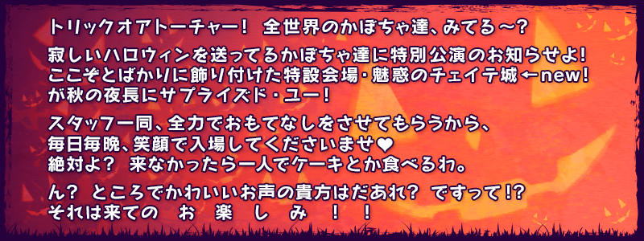
◆活動舉辦期間◆
2016年10月12日(三) 18:0022:30～10月26日(三) 13:59
◆活動概要◆
贈送由奈須きのこ&東出佑一郎的完全原創故事，舉辦期間限定萬聖節活動！
突然出現在南瓜城的熱鬧Servant們。會展開怎樣的萬聖節派對？
通過本活動的主線任務到最後的話，必定能獲得活動限定★4(SR)Servant「伊麗莎白・巴托里[萬聖節]」！
※本活動為於2015年舉辦的「歌詠南瓜城的冒險 ～狂亂派對2015～」，調整一部份活動道具交換的交換數等變得容易遊玩的「輕量版復刻活動」。
※活動限定Servant「★4(SR)伊莉莎白・巴托里〔萬聖節〕」及活動限定概念禮裝與2015年舉辦時同様可以獲得。
◆活動参加條件◆
只有通過「第一特異點 邪龍百年戰爭 奧爾良」的Master才能參加
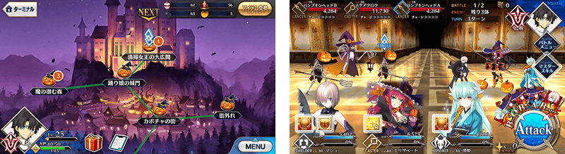
除了能享受故事的主線關卡、可以刷無數次的Free關卡外，從活動開始到10月18日(二)之間，每天11點、19點追加的派對關卡、隨機追加的游擊關卡。
※派對關卡及游擊關卡，開放後的活動期間中，無論什麼時候都可以挑戰。
※關卡通過後消失。
參加各式各樣的關卡獲得活動專用道具吧！
關於2015年舉辦時已通過的關卡，也能再次獲得通過報酬。
但是如果在2015年舉辦時獲得「聖杯」的話，在輕量復刻活動會替換聖杯成「伝承結晶」做為通過報酬。
裝備活動限定概念禮裝和期間限定概念禮裝的話，活動専用道具各自的掉落獲得數提升。
※請注意在各關卡的道具掉落率並非100%。
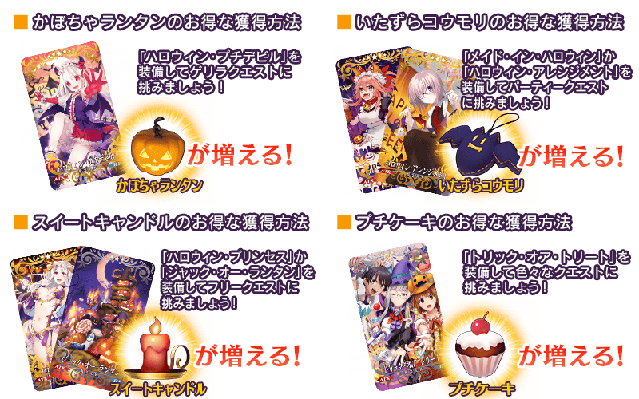

|
★★★★★SSR |
| 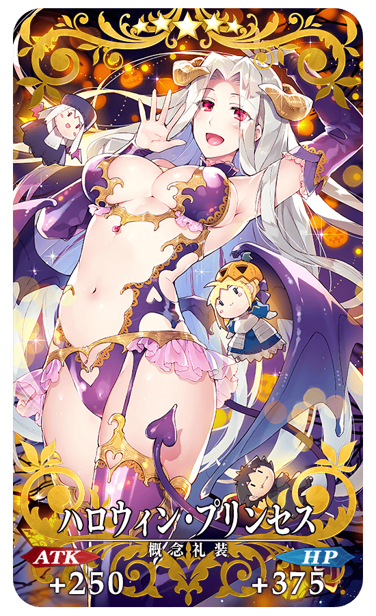 |
★★★★★SSR |
| 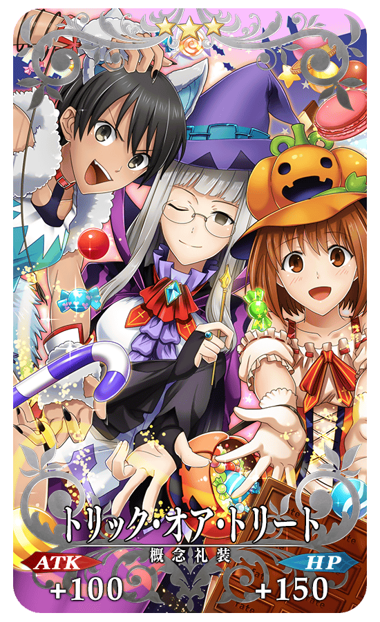 |
★★★R |
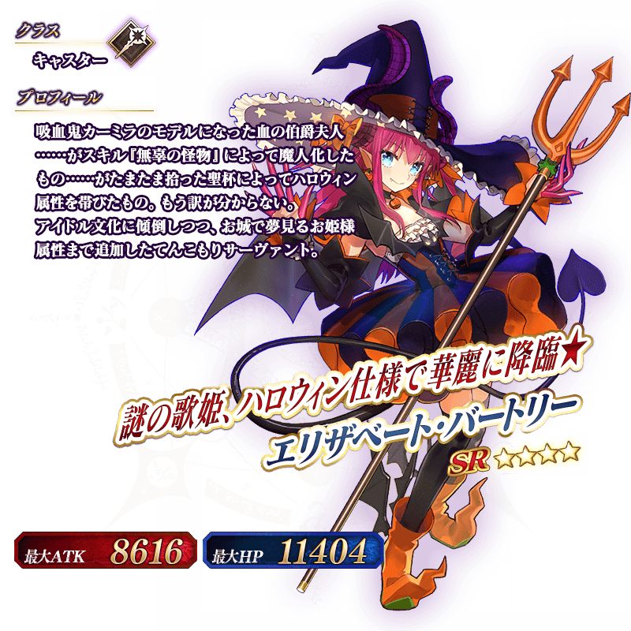
如果已經在2015年舉辦時獲得，也能獲得伊麗莎白・巴托里〔萬聖節〕。
◆靈基再臨◆
使用除了在活動期間中的道具交換入手的「ハートのブレスレット」，重複4次靈基再臨的話，卡面會有所變化！
※伊莉莎白・巴托里〔萬聖節〕不會隨靈基再臨使戰鬥角色的外觀變化。
◆交換方法◆
交換期間：2016年10月12日(三) 18:0022:30～11月2日(三) 13:59
※交換期間結束後｢かぼちゃランタン｣｢いたずらコウモリ｣｢スイートキャンドル｣「プチケーキ」會消失。
從達文西工房内的「活動道具交換」，用收集來的活動專用道具來交換以下的道具。
◆能用かぼちゃランタン交換的道具◆
|
【活動限定Servant】 【活動限定概念禮裝】 【靈基再臨素材】 【技能強化素材】 【其他道具】 |
◆能用いたずらコウモリ交換的道具◆
| 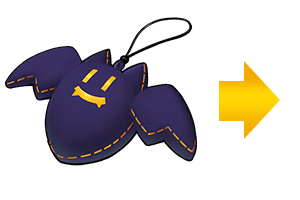 |
【活動限定Servant】 【活動限定概念禮裝】 【活動限定靈基再臨素材】 【靈基再臨素材】 【其他道具】 |
◆能用スイートキャンドル交換的道具◆
|
【活動限定Servant】 【活動限定概念禮裝】 【技能強化＆靈基再臨素材】 【靈基再臨素材】 【其他道具】 |
◆能用プチケーキ交換的道具◆
 |
【活動限定Servant】 【技能強化＆靈基再臨素材】 【靈基再臨素材】 【其他道具】 |
在達文西工房追加新要素「稀有稜鏡交換」！
消費新道具「稀有稜鏡」，能進行關卡的開放和道具的交換。
稀有稜鏡交換可以開放的關卡，主要以在過去宣傳活動等實施的關卡為對象。
稀有稜鏡交換對象的道具，包括過去的期間限定活動的活動專用道具和活動限定概念禮裝等。
稀有稜鏡是在靈基變還★5(SSR)或★4(SR)Servant時，除魔力稜鏡外再多給予。（「叡智の種火」和「做為活動報酬獲得的Servant」不適用給予。）
另外，對到目前為止被靈基變還或當強化素材使用的★5(SSR)Servant及★4(SR)Servant，根據數量做為禮物給予稀有稜鏡。
※禮物在10月12日(三)18:0022:30後第一次登入時，給予至禮物箱。
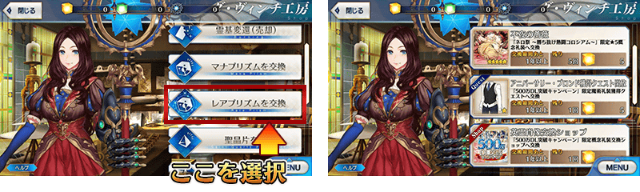
※開發中畫面。
◆「復刻萬聖節2015Pick Up召喚」期間◆
期間：2016年10月12日(三) 18:0022:30～10月26日(三) 13:59
舉辦期間限定「復刻萬聖節2015Pick Up召喚」！
在2015年舉辦的萬聖節Pick Up完全復刻！
「★5(SSR)玉藻前」以期間限定Pick Up！
另外「★4(SR)卡米拉」 「★4(SR)玉藻貓」 「★3(R)梅菲斯托費勒斯」 「★3(R)大流士三世」Pick Up。
詳情請在聖晶石召喚畫面左下的召喚詳細確認。
裝備期間限定概念禮裝「★5(SSR)ハロウィン・プチデビル」「★4(SR)ハロウィン・アレンジメント」「★3(R)ジャック・オー・ランタン」的話活動専用道具的掉落獲得數提升。
※「★3(R)ジャック・オー・ランタン」在Pick Up期間中，也能在友情點數召喚獲得。
Pick Up期間中，PickUp Servant、期間限定概念禮裝的出現機率提升！
10次召喚中★4(SR)以上1張確定和★3(R)以上的Servant1位確定！
※★4(SR)以上確定包含Servant和概念禮裝。
※所謂「出現機率UP」意指比同稀有度的Servant及概念禮裝出現機率更高的設定。
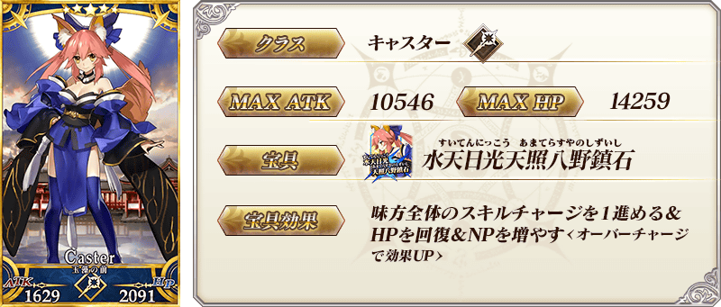

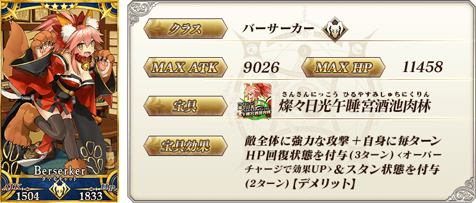

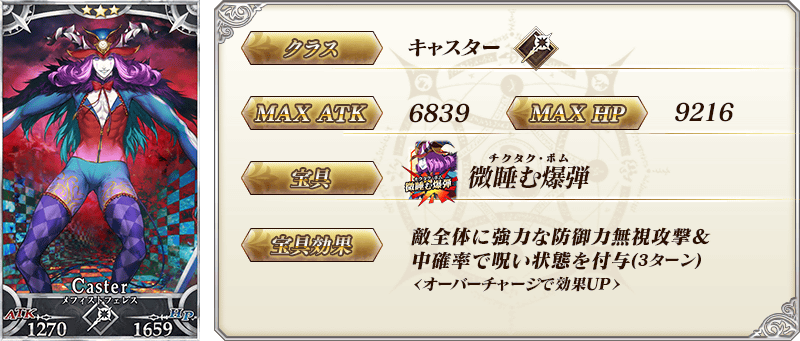

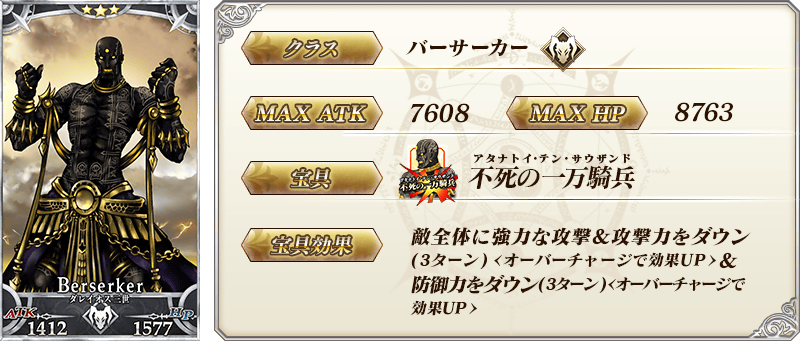
 |
★★★★★SSR ハロウィン・プチデビル ATK 500 (最大：2000) HP 0 技能 自身的NP獲得量提升20％＆NP以50％累積狀態開始戰鬥＋かぼちゃランタン的掉落獲得數增加1個【『復刻：歌詠南瓜城的冒險 ～狂亂派對2015～』活動期間限定】 |
|
★★★★SR ハロウィン・アレンジメント ATK 0 HP 600 (最大：2250) 技能 對自身賦予目標集中狀態(1回合)＆防禦力提升60%(1回合)＋いたずらコウモリ的掉落獲得數增加1個【『復刻：歌詠南瓜城的冒險 ～狂亂派對2015～』活動期間限定】 |
| 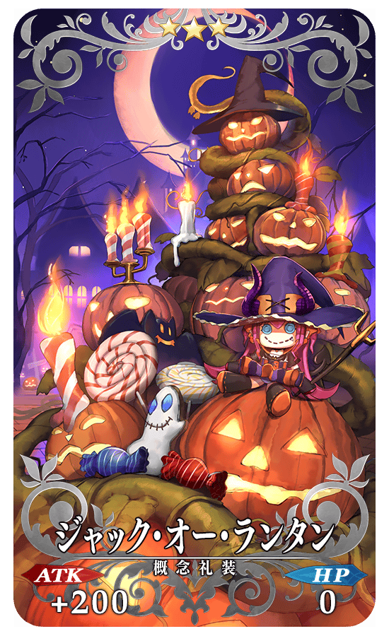 |
★★★R ジャック・オー・ランタン ATK 200 (最大：1000) HP 0 技能 對自身賦予傷害加成100狀態＋スイートキャンドル的掉落獲得數增加1個【『復刻：歌詠南瓜城的冒險 ～狂亂派對2015～』活動期間限定】  |